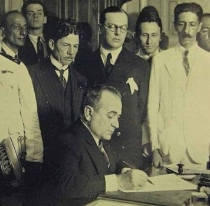

Decreto n.º 19.433, de 23 de novembro de 1930 - Criação do Ministério do Trabalho, Indústria e Comércio.
Uma das primeiras medidas do Governo Vargas foi a criação do Ministério do Trabalho, Indústria e Comércio, Decreto n.º 19.433 de 23 de novembro de 1930. O carioca Lindolfo Collor, um dos apoiadores da Revolução de 1930, foi o primeiro nome a compor o quadro dessa secretaria. “Com a criação desse ministério, o Poder Executivo tomava diretamente para si a formulação e a execução de uma política trabalhista.”